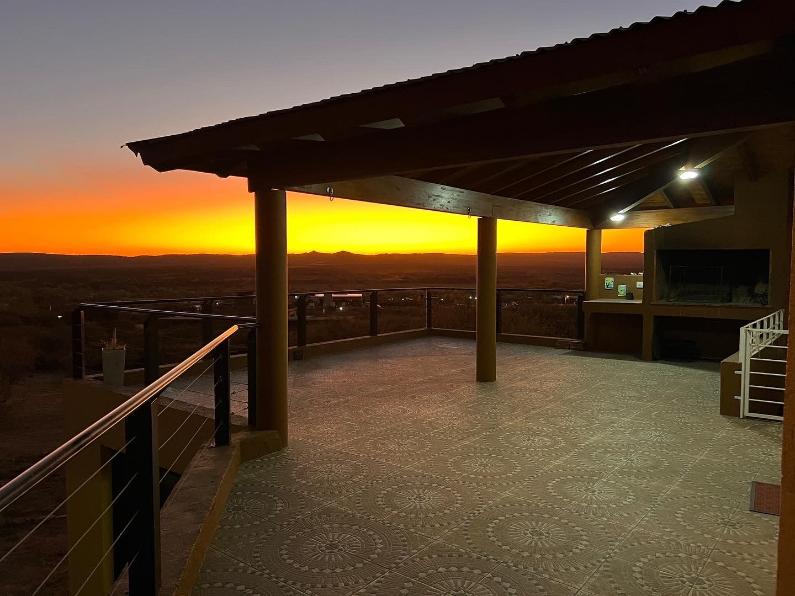
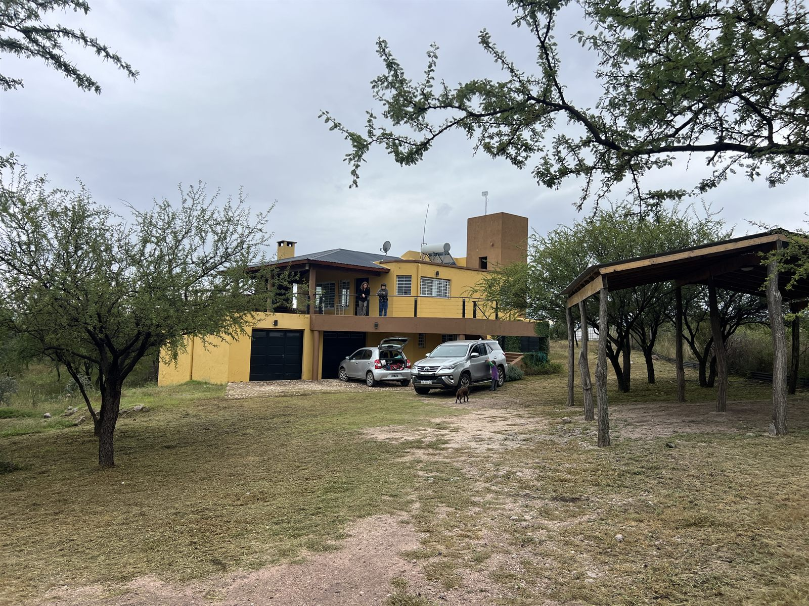
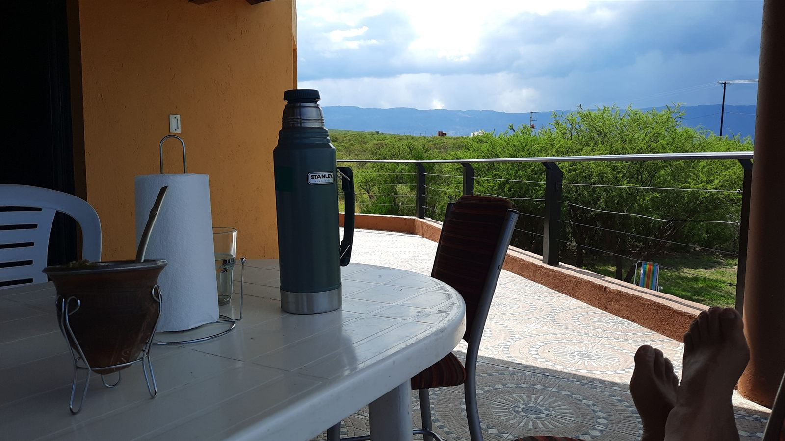
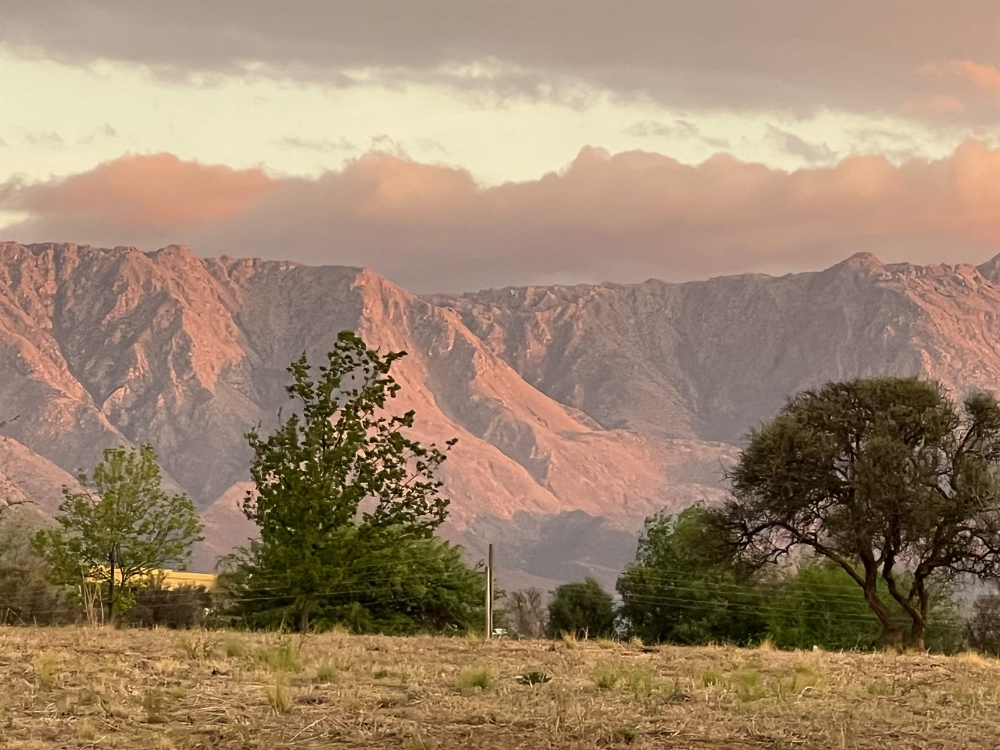

Cada planta tiene su cocina completa, su baño y su acceso propio: podés tomar la casa entera o solamente una, sin compartir nada. El precio cambia según la época del año y el calendario calcula el total exacto de tus fechas.
Fotos reales, sacadas en distintas épocas del año. Hacé clic para verlas grandes.
El campo está sobre el camino vecinal, en el paraje Arroyo de los Patos, con las Sierras Grandes de frente y el arroyo a pocos minutos caminando. Nono y Mina Clavero quedan cerca para las compras, la feria y las salidas, pero acá lo que se escucha de noche son los grillos.
Ríos, senderos, pueblos serranos y el camino de las Altas Cumbres, todo a distancia de una salida de un día.
Reseñas reales, tal cual las dejaron en Google y en Booking.
